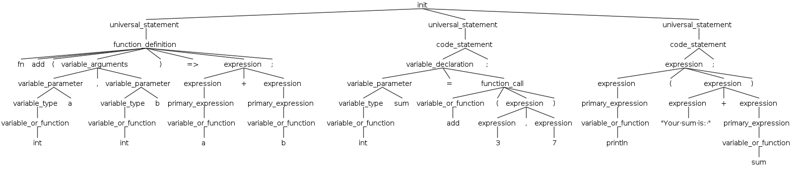

AST Creation With ANTLR4
All Asylum source code files at the end of the day are plain text documents. Somehow, we need to take this text and form it into something the computer can understand. This is called an Abstract Syntax Tree, or AST for short. Here’s an example program and its AST:
fn add(int a, int b) => a + b;
int sum = add(3, 7);
println("Your sum is: " + sum);
Generated AST: 
As you can see, the AST is a dissection of the program that discovers what the variables, expressions, and statements are. We can then pass this information into StraitJacket’s program builder API in order to build our program (more on that later). Note that the builder API abstracts program building, meaning that it is possible to arbitrarily define any syntax to produce a valid Asylum program. The files responsible for this AST creation are called grammar files, and can be found here.
ANTLR4 Overview
So how does it work? Asylum uses ANTLR4 to accomplish that, which when given a set of rules, can produce an AST from any text file. For example, here is the rule for parsing an item inside an enum:
// Enum entry.
enum_entry
: IDENTIFIER (ASSIGN_OP_EQ INTEGER)? #EnumEntryPlain
| IDENTIFIER '(' (variable_type (',' variable_type)*)? ')' (ASSIGN_OP_EQ INTEGER)? #EnumEntryData
| IDENTIFIER '{' (variable_parameter (',' variable_parameter)*)? '}' (ASSIGN_OP_EQ INTEGER)? #EnumEntryStructs
;
A token is in all caps. It represents an item that has definitive characters such as =, <, if, and myVarName. A rule is in all undercase. It represents how an item should be read, such as an if statement, for loop, expression, etc. A rule is allowed to use tokens and other rules to determine how it is read. Above, you can see various tokens and rules are used. But before we can understand how the above works, we must explain some ANTLR4 syntax. This is just a quick overview, and for a more definite guide you should read the official book or my guide here.
The Or Operator
| specifies an or option. Consider the following rule:
// Function property.
function_property
: STATIC
| INLINE
| ASYNC
| UNSAFE
;
This rule implies that a function property can match to either a STATIC, INLINE, ASYNC, or UNSAFE token. The definition of each token is defined elsewhere. If none of these tokens are present, then the text will not match as a function_property. This will error if a function_property is the only thing the parser is allowed to match, but will be perfectly acceptable if it is not needed to match.
The Maybe Operator
? specifies a maybe option. Consider the following rule:
// Struct entry.
struct_entry
: access_modifier? variable_parameter (';' | struct_entry_property) #StructData
| access_modifier ':' #StructAccess
;
The ? after the access_modifier rule means that if it can be matched, do it, but if not then it’s not a problem. The field is optional, not every property of a struct has to be declared with an access modifier after all. # is used after an option to label it, which is useful for the AST reading code. Also note from earlier how if the #StructData option is unable to be matched, it will then try to match #StructAccess.
The Infinitely Many Operator
* specifies an option that can be matched anywhere from zero to infinitely many times.
// Type implements.
type_implements
: ':' variable_type (',' variable_type)*
;
This is used for when a type implements subtypes. It can either match one type such as : string, or many other types such as : MyType1, MyType2, MyType3.
The At Least One Operator
+ specifies an option that has to appear at least one time.
// Unsigned.
UNSIGNED
: 'u' DecDigit+
;
Here, an UNSIGNED will match if u is followed by at least one DecDigit, so u1, u3273, and u0 are all valid matches, even if they are not legal.